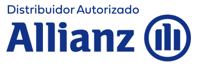

Plan Personal de Retiro
Puede contemplar beneficios fiscales conforme a la legislación aplicable y condiciones del plan.

TU RETIROPLANEACIÓN PATRIMONIAL
Descubre cuánto podrías necesitar para construir el retiro que quieres y qué estrategia puede tener sentido para ti.
TU ESCENARIO
Haz una primera proyección con tus propios datos. El resultado es ilustrativo y no representa un rendimiento garantizado.
Si facturas ante el SAT, podrías tener un beneficio fiscal, según tu ISR y las condiciones aplicables.
Una primera referencia con los datos que acabas de ingresar.
* Proyección ilustrativa con supuesto de 10% anual nominal, inflación de 4% anual y capitalización mensual. El beneficio fiscal mostrado usa 20% únicamente como referencia educativa; no es una garantía ni sustituye el cálculo fiscal de tu situación particular. La aplicación de beneficios depende de la legislación vigente, del producto contratado y de las circunstancias del contribuyente.
SIGUIENTE PASO
Déjame tus datos y agenda directamente una llamada conmigo para revisar tu objetivo, tu capacidad de aportación y las alternativas que podrían aplicar a tu situación.
HABLEMOS DE TU RETIRO
En menos de un minuto, Georgina te explica cómo usar esta proyección y qué revisar antes de tomar una decisión.
“Hola, soy Georgina, agente de seguros certificada. Si estás aquí, probablemente ya te preguntaste cuánto vas a necesitar realmente para retirarte. No necesitas adivinarlo. Podemos revisar tu escenario, tu objetivo y cuánto podrías destinar hoy para construir ese patrimonio. Si además te interesan los beneficios fiscales, podemos revisar qué alternativas podrían aplicar a tu situación. Llena el formulario y yo personalmente revisaré tus datos contigo.”
45–60 segundos
LA ESTRATEGIA
Un plan de ahorro individual diseñado para ayudarte a construir un patrimonio a largo plazo mediante aportaciones programadas y diferentes alternativas de inversión.
RESPALDO Y REGULACIÓN
Distribuidor Autorizado Allianz
Protege y orienta a los usuarios de servicios financieros.
Supervisa y regula al sector asegurador y afianzador.
BENEFICIOS FISCALES
Existen distintas modalidades y tratamientos fiscales. Revisemos cuál puede tener sentido para ti.
Puede contemplar beneficios fiscales conforme a la legislación aplicable y condiciones del plan.
Tratamiento fiscal sujeto a la modalidad contratada, condiciones y requisitos aplicables.
Otra alternativa que puede formar parte de una estrategia integral de ahorro para el retiro.
La información fiscal es general y no constituye asesoría fiscal. La aplicación de beneficios depende de la legislación vigente, del producto contratado y de las circunstancias particulares del contribuyente.
EXPERIENCIAS
Esta sección está lista para colocar testimonios reales autorizados.
Testimonio real pendiente de agregar.
— Cliente, con autorizaciónTestimonio real pendiente de agregar.
— Cliente, con autorizaciónTestimonio real pendiente de agregar.
— Cliente, con autorización
SOBRE GEORGINA
Soy Georgina, agente de seguros certificada. Mi objetivo es ayudarte a entender cuánto necesitas, qué estás construyendo y qué alternativas pueden alinearse con tus metas.
Primero conocemos tu escenario. Después revisamos opciones. Y solo entonces tomamos una decisión.
Quiero hablar contigoPREGUNTAS FRECUENTES
Es un esquema de ahorro para el retiro que puede ofrecer beneficios fiscales bajo determinadas condiciones. La modalidad y requisitos deben revisarse en cada caso.
Es un plan de ahorro individual con aportaciones programadas y alternativas de inversión. Sus características dependen de las condiciones contratadas.
No existe una cantidad universal. Depende de tu edad, horizonte, objetivo, flujo disponible y estrategia integral.
Puede ser posible según la modalidad del plan, legislación vigente y tu situación fiscal. En una llamada podemos identificar qué revisar.
La estrategia puede revisarse con el tiempo. Las modificaciones y opciones disponibles dependen de las condiciones del contrato.
Las opciones de liquidez, retiros o préstamos están sujetas a las condiciones del plan y pueden tener implicaciones fiscales.
La primera revisión de tu escenario es sin costo y sin compromiso de contratación.
Recibirás la opción de agendar una llamada. Revisaremos tus objetivos y, si tiene sentido, te presentaré una propuesta personalizada.
TU SIGUIENTE PASO
Elige cómo quieres continuar.